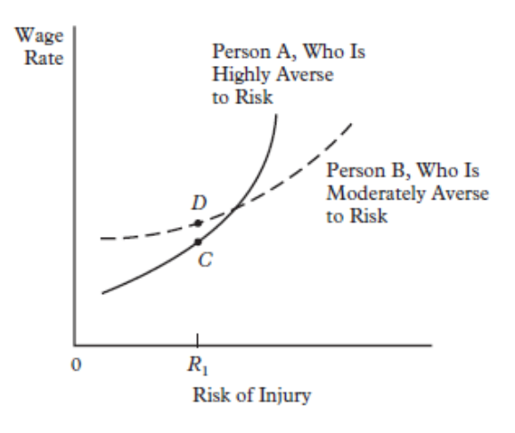
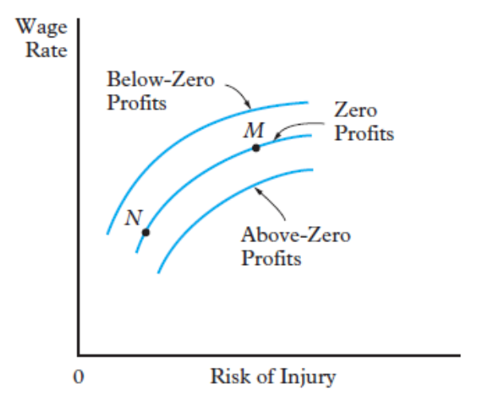

6. Compensating Wage Differentials
🤔 Which job workers choose? Why are some jobs paid more?
In previous lessons, we often assumed workers and jobs were somewhat "homogeneous." In reality, the labour market is highly diverse. Understanding Compensating Wage Differentials (or Equalizing Differences) helps explain why two workers with identical skills might earn very different wages purely based on their job's characteristics.
1. Workers: Skills & Preferences
Workers are heterogeneous. They don’t value jobs the same way because of:
- Skills (Human Capital): Differences in education and experience affect productivity and wages.
- Preferences (Non-monetary): Workers prioritize different things like flexible hours, remote work, or job stability.
2. Employers: Requirements & Environment
Jobs are also heterogeneous on the supply side:
- Requirements: Scarcity of specific skills (e.g., medical degrees) limits supply and keeps wages high.
- Working Conditions: Jobs differ in risk, physical effort, or unpleasant environments (e.g., night shifts, noise).
🧠 Workers’ Utility Maximization
Workers maximize utility, not just their nominal wage. This means they are willing to trade off money for better working conditions.
The Pure Mechanism
To isolate this effect, let's assume homogeneous workers (same skills) but heterogeneous jobs.
Initial Wage: 150 CZK/h
Result: High Utility ($U_1$)
Initial Wage: 150 CZK/h
Result: Low Utility ($U_2$)
At the same wage, everyone picks Firm 1. This creates a labour shortage for Firm 2, forcing them to raise wages to attract workers.
⚖️ Theory of Equalizing Differences
The Theory of Compensating Wage Differentials (Equalizing Differences) predicts that wage differences across jobs reflect compensation for undesirable job characteristics.
Core Assumptions
For these differentials to emerge clearly, the model relies on 4 specific conditions:
Workers have the same skills and productivity. Wage differences come only from job traits ("All else equal").
Workers choose jobs based on total utility ($U = f(W, \text{characteristics})$), not just income.
Workers are fully aware of risks (e.g., probability of injury) and working conditions.
Workers have multiple job offers and can move freely between firms to find their optimal trade-off.
🛡️ The Economics of Risk
Risk of injury or death is the most common example of a "bad" job characteristic. We analyze this using Indifference Curves for workers and Isoprofit Curves for firms.
1. The Worker's Perspective

Visual Analysis:
- Upward Sloping: Because Risk is a "bad," if it increases, the wage must increase to keep utility constant.
- Convex: As risk becomes very high, workers demand progressively larger wage increases to accept one more unit of risk.
- Direction of Utility: Utility increases as we move Up (Higher Wage) and Left (Lower Risk).
2. Sorting Based on Preferences

Not all workers view risk the same way. The market "sorts" them based on their Risk Aversion:
- Person A (High Aversion): Steep curve. They need a massive wage hike for small risks. They typically settle in safe jobs.
- Person B (Moderate Aversion): Flatter curve. They accept risk for a smaller premium and usually choose dangerous jobs.
🏭 The Employer's Perspective
Firms also face a trade-off. Reducing risk (improving safety) is expensive. To stay competitive and maintain profits, a firm that spends more on safety must spend less on wages.
1. Isoprofit Curves

Visual Analysis: An isoprofit curve shows all combinations of Wage and Risk that yield the same profit level.
- Upward Sloping: If a firm moves to a safer environment (Left), it incurs costs and must lower wages to keep profits at zero (Competition).
- Concave: Reflects "diminishing returns" to safety. The first safety measures are cheap, but making a job 100% safe is exponentially expensive.
🧪 Empirical Evidence & Limitations
Does the theory hold up in the real world? While logically sound, testing Compensating Wage Differentials is notoriously difficult for economists.
Research Challenges
- OMITTED VARIABLE BIAS: High-risk jobs might also require high skills. If we don't control for skills, we might attribute a high wage to risk when it's actually due to education.
- Subjectivity: "Stress" or "Unpleasantness" are hard to measure compared to "Risk of Death."
Market Frictions
The theory assumes perfect markets, but often:
- Imperfect Information: Workers might not know how dangerous a job truly is.
- Limited Mobility: Workers might be stuck in bad jobs due to poverty or geography.